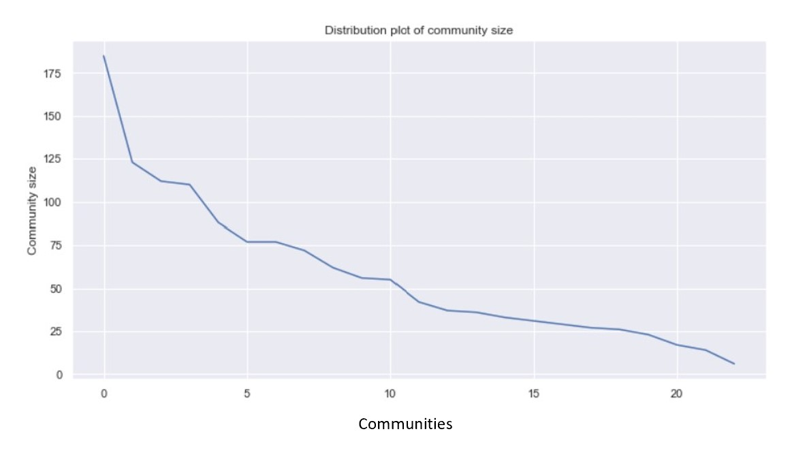

The Rio Olympics
2016 Athletes network
At the Olympics 2016 in Rio, [11,238] athletes participated.
The folliwing visualisation show 5318 of the athletes.
This huge graph shows all the athletes participating in the Olympics 2016.
However, it becomes clear that many of the athletes do not have any links to any other athlete. This can be due to many athletes only having very little information
on the Wikipedia page, and no link to any other athlete competing at the Olympics. Many of the individual sports
are also not having links to any other atletes, and are therefore not a part of the connected component.
Take a look at this cool sabre fencer, [Eileen Grench].
She might be really interesting, however she is neither linking to anyone, or anyone linking to her.
we will have to remove them from the graph, since Network science only makes sense if there is a network (e.g. links between nodes).
Connected Athlete Network
The graph now shows 1328 of the athletes and their links between each other. This is called a
subgraph of the big athletes graph we saw above.
These 1328 athletes are in fact the Giant component found in the olympic athletes network.
This means, that these athletes are all somehow linking to each other, either directly or through someone, and
this network the biggest connected network in the Olympics 2016 (according to Wikipedia).
Even though these athletes are all connected somehow, 1328 people are for sure not "friends". There must be
smaller groups of athletes, that have more in common with each other than the rest of the athletes.
We will try and answer this question by looking into the communities of the Giant Component
Quickly we can identify some of the commnities from the big Olympic Network.
However, the communities are much easier to see and differentiate between.
This network is called a social network, where there are already easy to spot communities. It might be obvious that the group of athletes that
perform the same sport are in a community together, or the athletes that have often been playing against each other, are in communities together.
To detect the athletes community, clich [HERE skla der være klik til interaktiv]
Cliqus within the communities
Looking at the network, some communities seem very dense, where some are more spread out.
Why is that and who are these athetes?
In Network science there are something called strong and weak communities. This is defined by how many cliques the community has.
A clique in a network corresponds to a complete (fully connected) subgraph, where all the nodes are connected.
If a community is having many cliques and thereby makes every node within the community have more links to each other than to other nodes outside the community,
it is defined as a strong community. If the opposite occurs, the community is a weak community.
Looking at the connected athletes' network, community XX and XX are clearly strong communities, only determined by the density of the community.
But investigating the number of cliques inside the two sommunities also revieal that this is true. The biggest clique in all of the olympic network is
found in community XXX.
This clique are all famous female tennis players. All of these tennis players are linking to all the other tennis players in the cliniqe, which is what
is called fully connected. Try visit [Serena Williams] Wikipedia page, and see if you can find
the 16 female tennis players that her page links to.
But can we detect the communities even more, and maybe spot which sport isolates athletes from other sports, and which sports that might connect athletes across sports.

First we will look at the
distribution of the sizes in the different communities. We see the same tendency now as for the big Olympic Network.
Few communities contain many athletes and more communities contain fewer athletes.
What descibes these communities?
Are the big communities including communities, where many sports are included, or are they the reserved communities, where only their own athletes are welcome?
Let's detect the behaviour of the communities by looking at their Wikipedia pages.
Wordcloud for atletes communities
The word cloud for Community 0 clearly determine the theme of the community to be Tennis.
This can be seen by the important words as wta, slam, wimbledon etc.
Many top tennis athletes are also mentined, as Venus and Ivanovic .
Looking at community 1, the word golf apear. Hence this community is very likely
containing many gold athletes.
In Community 2 the words bandminton and bwf (Badminton World Federation)
are counted as important and hence representative for the sport badminton.
Lastly, community 3's most important word is rower followed by scull
and glover, which is [Helen Glover],
the Rio 2016 gold medalist in rowing (together with her partner [Heather Stanning].
The above four communities are amongst the 23 communities, that were found
in the athletes network. Lets look at a bar chart, that show if we are corect
in our hypothesis, that the sport defines the community.
Are communities divided by their sport?
The following bar chart show how the different sports are divided into the communities.
This bar chart confirm the hypothesis, that the communities are seperated by sports. TRALALLA
Evaluation of communities
From the above bar chart, it became clear that the athletes have their sport in common
within their community.
But what about the mood in each community? We have all heart the rumers that
some sports are collaborative an knowledge sharing, whereas other sports
are much more individual and competitive. Would this be possible to investigate?
There are something called sentiment analysis. This is an analysis that takes
the given text and give each word in the text an average sentiment value.
In the end, you can take the average sentiment value of the whole text, and determine its average sentiment.
Maybe this is possible with the communities? Let's read all the Wikipedia pages in each community and calculate the average sentiment.
OK. Wikipedia does not differentiate much between the sentiment for each sports community.
Since Wikipedia are supposed to be neutral in its language, this was expected.